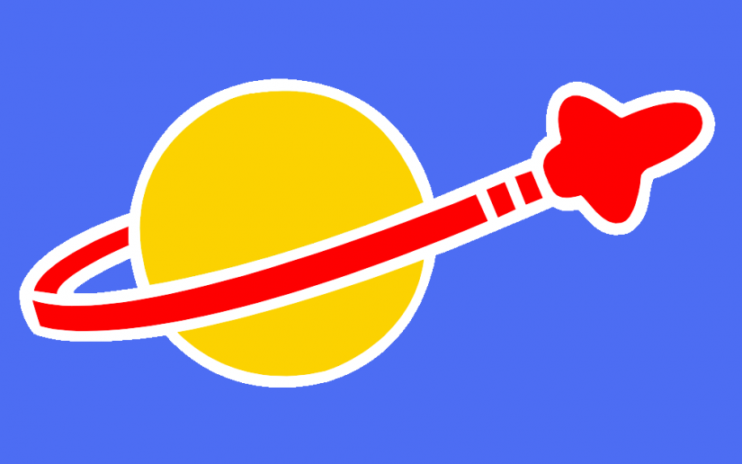

Le système solaire

Le système solaire, est le systeme planetere du soleil, auquel appartient la Terre. Il est composé de cette étoile et des objets célestes grativante autour d'elle : les huit planètes confirmées et leurs 214 satellites naturels connus, cinq planètes naines, ainsi que des milliards de petits corps.
Les 8 planètes
- Les planètes telluriques
- Mercure rayons : 2439Km
- Venus: rayon : 6051 Km
- Terres: rayon : 63
- Mars: rayon: 3369Km
- Les géantes gazeuze
- Jupiter: rayon: 71492 Km
- Saturne: rayon : 60268km
- Uranus: rayon 25559Km
- Neptune: rayon : 24764Km
Les planètes naines
- Pluton: système bainaire avec son satellite charon
- Céres : situé dans la ceinture d'astréoides entre Mars et Jupiter
- Ocrus: plutoide, surnommé l'anti-pluton
- Hauméa: plutoide transneptunien
- Éris: situé au dela de la ceinture de Kuiper
Anneaux et satellites
| Type | Nom | Anneaux | Satelites |
| Tellluriqueq | Terre | 0 | 1 |
| Mars | 0 | 2 |
| Géantes | Jupiter | 3 | 92 |
| Saturne | 7 | 82 |
| Uranus | 13 | 29 |
| Neptune | 5 | 14 |
Sources